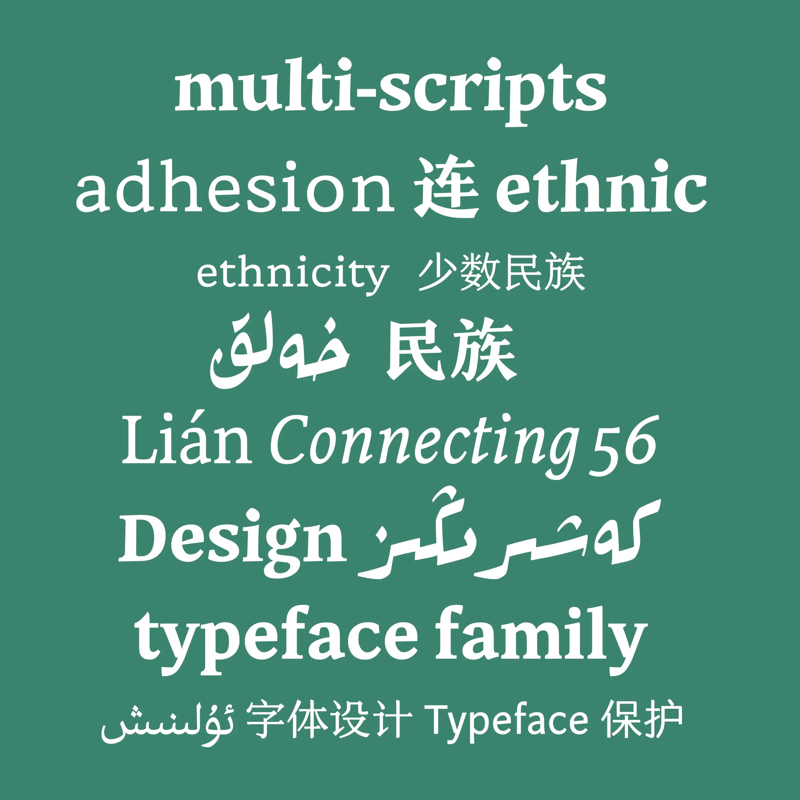
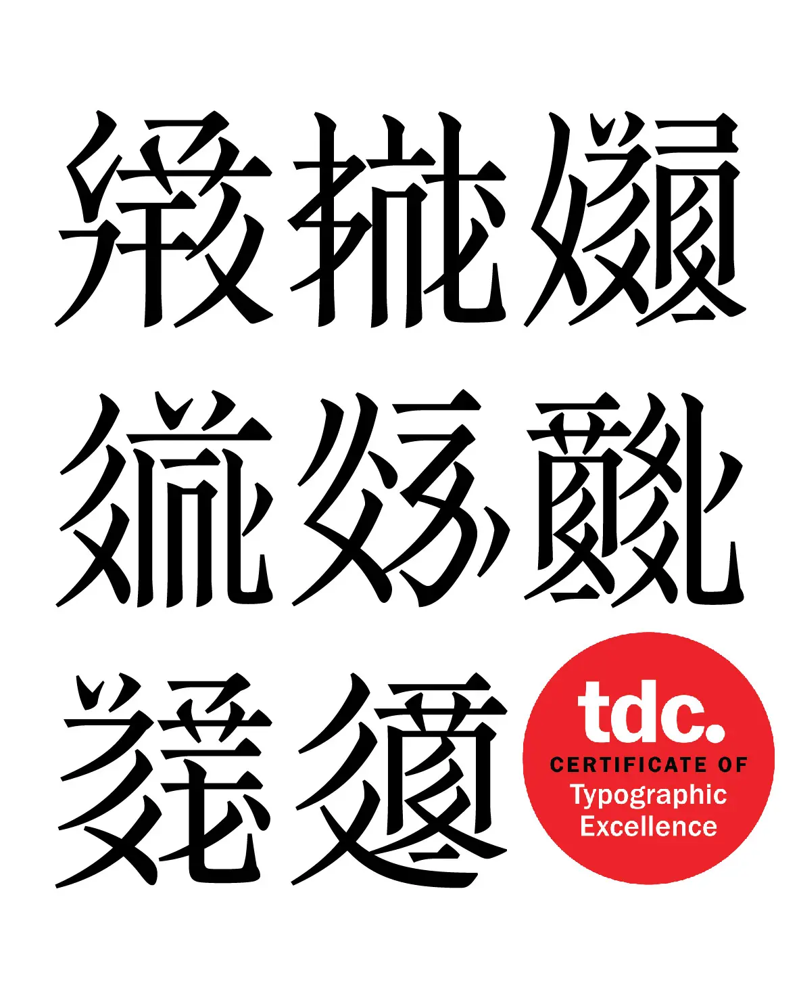
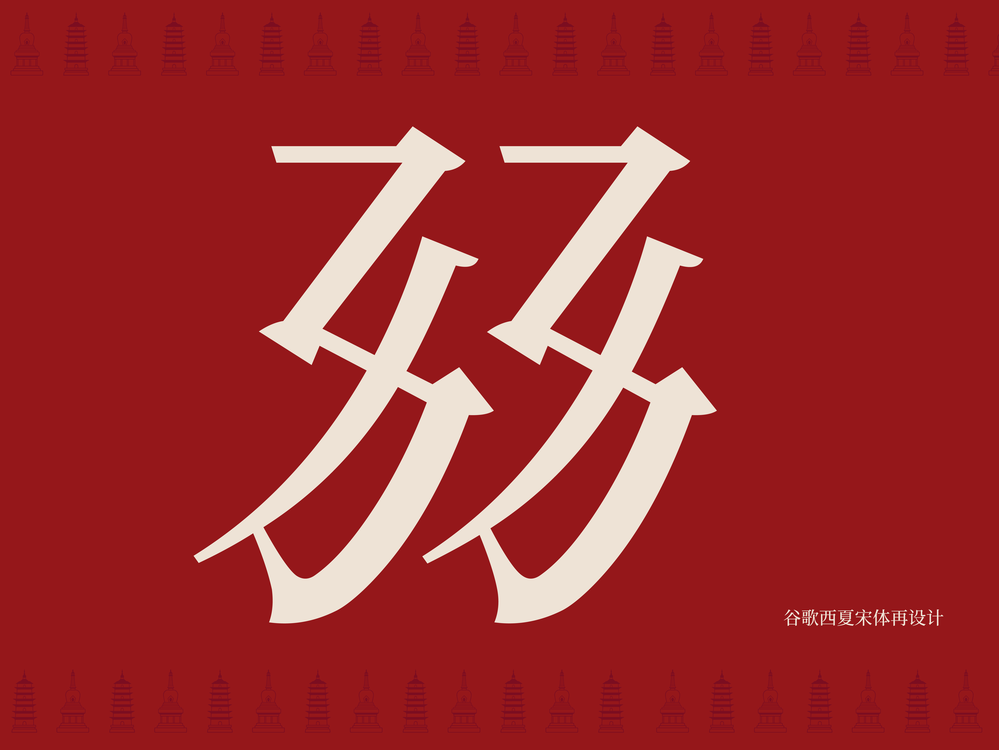
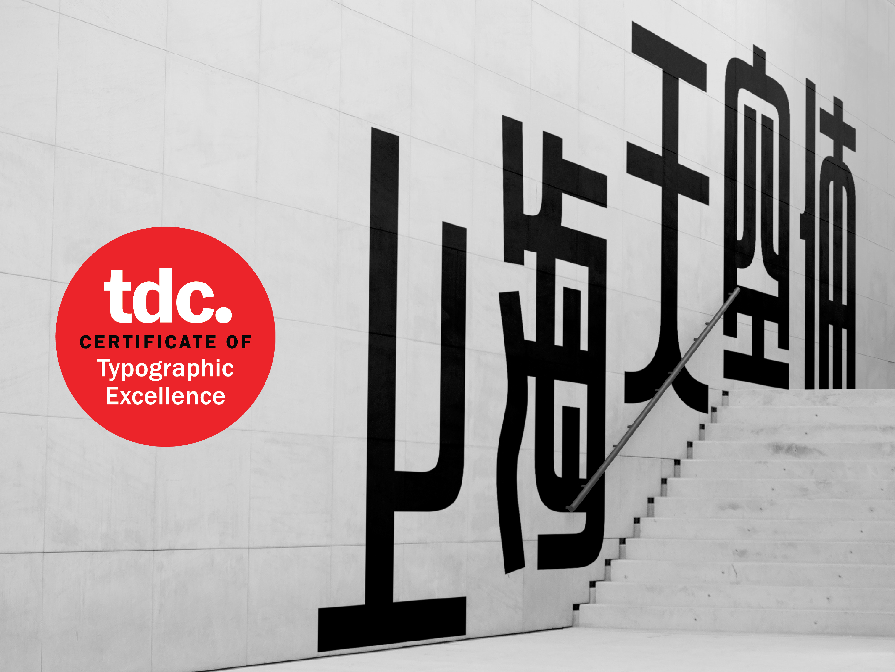
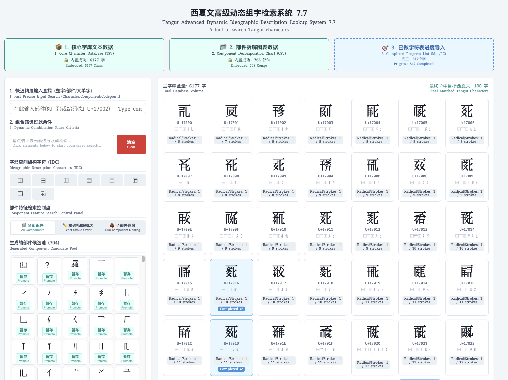

Selected typefaces, revivals, and typographic tools.

Lyean
An award-winning expansive typeface family harmonizing Latin, Arabic, and Simplified Chinese scripts under a unified typographic voice.

AraTangut
A research-grade custom revival typeface designed for Professor Arakawa Shintarō, breaking new paradigms in digital typography for the extinct Tangut script.

Noto Serif Tangut
A massive systemic redesign and technical overhaul of the official Google Fonts Tangut repertoire, optimizing digital readability and architectural balance.

Shanghai Sky
An award-winning display typeface blending expressive geometry with classic strokes, engineered for high-impact editorial headlines.

Tangut Character Composition & Search Utility
A custom-coded functional search engine and input interface designed to solve radical decomposition and indexing bottlenecks for digital Tangut research.